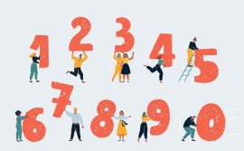

|  | ||||
Yoon taps Park Jin as foreign minister, Kwon Young-se as unification minister |
||||
How South Korea's complex age custom has endured |
President-elect Yoon Suk-yeol on Wednesday announced his choices of eight ministers and the presidential chief of staff, filling eight out... |
|||
|
“How old are you?” Answering this simple |
Justice minister nominee Han Dong-hoon steals the show |
|||
Confusing 'Korean age' system dies hard" question often becomes a challenge fo..." |
Number of students from multicultural backgrounds triples over 9 years |
|||
Korea's central bank hikes interest rate by quarter percentage point to 1.5% |
The number of students from multicultural backgrounds grew three times over the last nine years to 160,000. According to the Ministry of G... |
|||
"What Cabinet nominations say about Yoon's foreign policy, security posture" |
President-elect Yoon Suk-yeol's nominations of key members of his national sec... |
Job market yet to show robust recovery despite improved figures: experts |
||
|
Korea's job market is still far from entering a phase of robust recovery despite remarkable improvements in employment statistics. Experts... |
||||